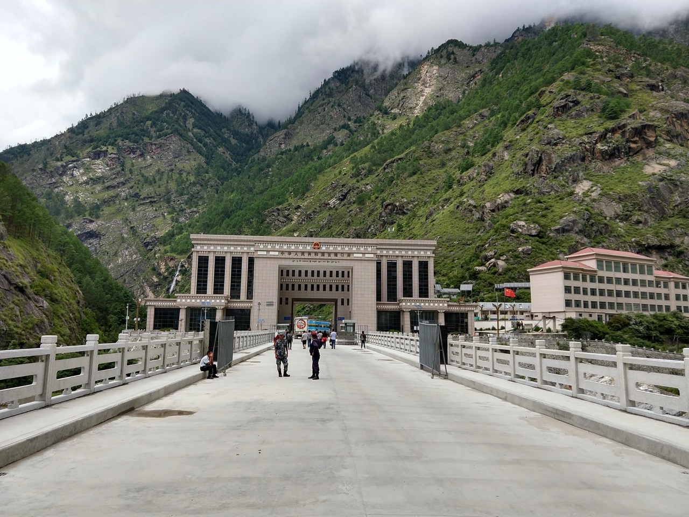

DATA NEWS2026中文
26 AUGUST · GYIRONG
Names Beneaththe Torrent
A data chronicle of the 2026 debris flow at Gyirong Port, on the China–Nepal border
On 26 August 2026, a debris flow passed through Gyirong Port. Through that morning, the valley, and the rescue registers, we return to the names.
Enter the data chronicleText and visualization · Yadnus, Angel
Total views: —

about 12 min